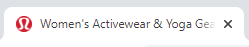

click here to go back to the home page.
| Tag | Definiton | Examples |
|---|---|---|
| <DOCTYPE html> | DOCTYPE html indicates that the document is html | |
| <html lang="en"> | Indicates the start of the document and the document's language | This webpage is set to english |
| charset | Charset tells the web browser how to interpret the keyboard symbols, especially for non latin inputs | 穐 |
| title | Title gives the document a title |  |
| <style> | Internal CSS is used to define the style of a single HTML page, it's defined in the head | |
| <link rel="stylesheet" href="styles.css"> | External CSS is a style sheet located in a separate CSS file that can be accessed by creating a link within the head of the webpage | |
| <link rel="icon" type="image/x-icon" href="/images/favicon.ico"> | A favicon is a small image displayed next to the page title in the browser |